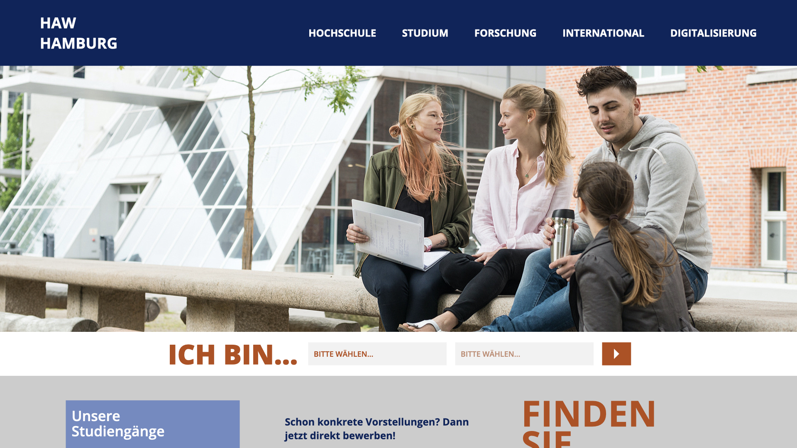

We are proud to finally unveil our new corporate design. HAW goes 2025!
Find out more!The Pantone Color of the Year 2020 is Pantone 19-4052 Classic Blue. As proud citizens of a port city, we love marine colors and those have always been an inspiration for the corporate design.
However, we wanted to have deeper, richer colors. A main that is reminicient of the sea at night, both vibrant and muted at once. That might seem like a contradiction, but with our main color we think we found the perfect balance.
Royal Blue Dark / HSL: 220°, 80%, 20% / #0A255C
To create our color palette, we looked at shades and tints, as well as related colors, to see if we could create the look we were going for.
Shades of #0A255C
Tints of #0A255C
Here we get an overview of color relationships
Monochromatic
-
Complementary
-
Triadic
-
-
Analgous
-
The complementary color of our main color is rather dull and drab and is not an effective highlight color. As such we decided to play with the HSL color model to generate our palette.
| HSL Values | Primary | Primary Light | Neutral | Accent Light | Accent |
|---|---|---|---|---|---|
| Hue (0-360°) | 220 | 220 | 0 | 20 | 20 |
| Saturation (%) | 80 | 40 | 0 | 40 | 80 |
| Lightness (%) | 20 | 60 | 80 | 60 | 40 |
As we can see, there is a pattern to the values. For our main color and its lighter version, we selected the hue of 220° and played with the saturation and lightness until we created a harmonious combination that is both pleasing to the eye and carries on the marine theme.
The complimentary color has the hsl values of 40°, 80%, 20%. Below you can see, how we adjusted the values of the complementary color to create a more vibrant and attention grabbing color.
Complementary
+ Hue changed from 20 to 40
+ Lightness changed from 20 to 40
So we ended with the main accent color having the hsl values of 20°, 80%, 40%. For the lighter accent color, we decided to mirror the lighter main color but leave the hue of the accent color.
220°, 40%, 60% / Light Primary Color
20°, 40%, 60% / Light Accent Color
20°, 80%, 40% / Accent Color
As such, we're left with this palette:
The need for a light neutral color becomes clear. Both lighter colors are still very attention grabbing and as such we need a color that is muted and does not redirect attention from the main colors.
Here we have the full palette again. It is embedded from coloors.co.
And here we have a basic mockup of the landing page.
